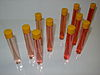

sample

Definition: In general, a sample is a limited quantity of something which is intended to be similar to and represent a larger amount of that thing(s). The things could be countable objects such as individual items available as units for sale, or an uncountable material. Even though the word "sample" implies a smaller quantity taken from a larger amount, sometimes full biological or mineralogical specimens are called samples if they are taken for analysis, testing, or investigation like other samples. They are also considered samples in the sense that even whole specimens are "samples" of the full population of many individual organisms. The act of obtaining a sample is called "sampling" and can be performed manually by a person or by automatic process. Samples of material can be taken or provided for testing, analysis, investigation, quality control, demonstration, or trial use. Sometimes, sampling may be performed continuously.
Source: Wikipedia
Wikipedia Page (Something wrong with this association? Let us know.)
Wikidata Page (Something wrong with this association? Let us know.)
Occurs in: